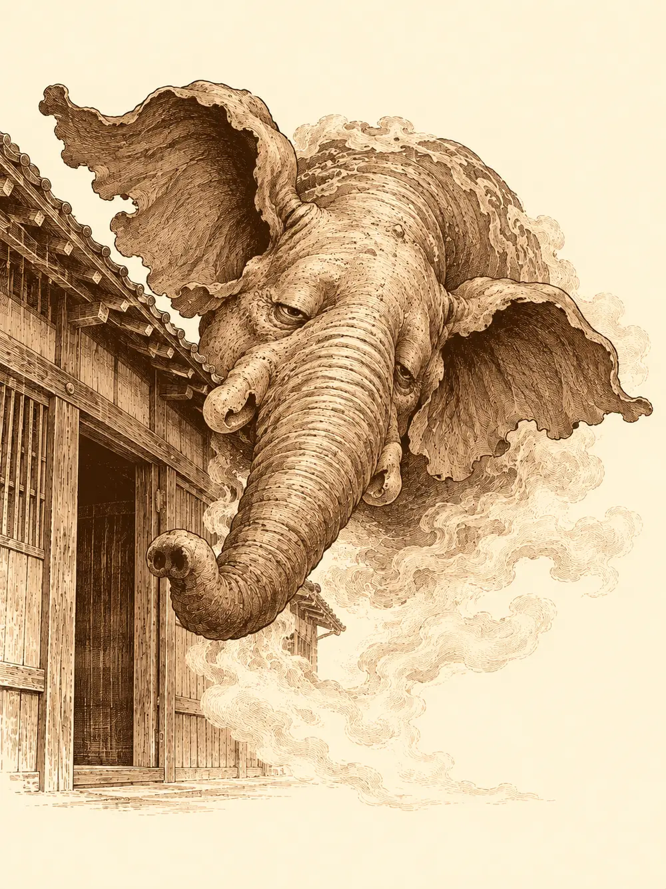

Capítulo 5
Sueños de borrachos
Libro I · Los cazadores de Ukio
Había pasado una semana desde la noche del burdel y, al menos durante los primeros días, todo había ido bien. La madame cumplía su palabra, o eso parecía, y algunos cazadores habían vuelto a cruzar su cortina roja con la tranquilidad de quien tiene un trato firmado. En la taberna de Kitaro, el nekomata dormía sobre la chimenea con la barriga al aire y las dos colas colgando hacia las brasas.
Sun Gukon había vuelto de muy mal humor.
Llevaba un mes recorriendo la comarca detrás de una estatua. Una diosa de piedra que sustituyera a la que él mismo había partido en dos en el patio de aquellos pescadores, por culpa de un gato que ahora roncaba a tres pasos de su mesa. Un mes entero, y la estatua seguía sin aparecer. Y al volver se encontraba con que sus compañeros se habían ido de juerga a un sitio de señoras de moral distraída, habían matado monstruos, habían cobrado cien monedas por cabeza y no lo habían esperado.
"Yo por mis compañeros casi me muero dos veces", le dijo a Hayate, "y en cuanto me doy la vuelta os vais de parranda sin mí".
"Te echamos de menos", le contestaron. "Hubo golpes como panes".
Aquello no lo consoló. Leonardo, que también acababa de regresar después de mucho tiempo fuera, tomó asiento en silencio con su caparazón contra el respaldo. Po, debajo de la mesa, buscaba migas.
Sun decidió que la única forma de arreglar aquel día era con sake. Agarró la botella más cercana, se la llevó a la boca y la inclinó. No cayó nada. Todas las botellas que encontró en la taberna estaban secas como cañas viejas.
Kitaro limpiaba las mesas con la cabeza gacha. El monje dio un bastonazo en el suelo que hizo saltar los cuencos.
"¿Qué ha pasado con el sake?".
El tabernero se acercó con cara de vergüenza. No había querido molestarlos con aquello, explicó, porque no era asunto de yokai y no le parecía digno de unos cazadores como ellos. Pero alguien le estaba robando el sake. Lo había denunciado a los soldados, y los soldados habían mirado y no habían encontrado nada.
"No es que podamos ayudarte", dijo Sun. "Es que debemos".
La trastienda olía a madera húmeda y a alcohol derramado. Había cajones abiertos, botellas vacías por el suelo y alguna rota, y nada que se pareciera a una cerradura forzada. Sun y Hayate revolvieron por todas partes sin sacar nada en claro. Fue Po, que era el único que cabía debajo de las mesas y que andaba allí abajo buscando corteza de pan, quien vio las huellas.
Eran pequeñas, muchas, de un animal menudo. Po asomó la cabeza, agarró a Leonardo por un pie y se lo midió con las patas a toda prisa, por si acaso. No coincidía. Apartaron la mesa y Hayate se agachó junto al rastro.
"Se mueven a dos patas", dijo al cabo de un rato. "Pueden andar a cuatro, pero aquí van a dos. Seguramente porque llevaban algo en las otras". Siguió las marcas con el dedo por el suelo de la cocina hasta una ventana pequeña y corredera que daba al exterior. "Varios. Y parecen mapaches".
"¿Mapaches?", repitió Kitaro desde la puerta. "En este bosque no se ven mapaches".
Junto a la chimenea, algo se desperezó. El nekomata se rascó una oreja, los miró con fastidio por haberlo despertado y bajó de un salto.
"¿Qué estabais diciendo de unos mapaches?".
Alguien le acercó un cuenco de leche, para tenerlo de buenas. El nekomata bebió despacio, sin apartar los ojos del monje, y cuando terminó pasó a mirar a Po con la misma fijeza, como quien calcula raciones.
"Esos asquerosos son tanuki", dijo al fin, lamiéndose el bigote. "Entran por la ventana de la cocina y se llevan el sake".
"¿Y tú, bola de pelo, no has sido capaz de pararlos?", le soltó Sun.
"¿Por qué iba a pararlos? Es vuestro alcohol, no el mío".
Le preguntaron si sabía dónde vivían. Claro que lo sabía. Sacó una uña y la arrastró por el suelo, despacio, con un chirrido largo. Quizá se acordaría mejor con una recompensa, algo de comer. Había visto un pescado enorme en la cocina.
Leonardo fue a buscarlo. Volvió con el pez en la mano y el gato se plantó delante de él con los ojos muy abiertos, redondos y brillantes, la mirada que ponen los gatos cuando quieren algo. La tortuga no se inmutó. Entonces el nekomata le clavó la uña en el pie, y Leonardo, por puro reflejo, le dio con el pescado en toda la cara.
El pelo del gato se erizó entero. Le brilló a su alrededor un resplandor morado, los ojos se le volvieron rojos, y durante un momento muy largo nadie respiró en la taberna. Después, con un movimiento rapidísimo, le arrebató el pescado de la mano, se subió a un barril y empezó a comérselo.
"Ya tienes tu pescado", le dijeron. "¿Nos cuentas dónde están?".
"No me caen bien tus amigos. El mono es asqueroso". Masticó un rato. "Viven en el bosque. Seguid los árboles rojos, los de hojas rojas, siempre recto, y llegaréis a un claro. Es el único sitio de ese bosque donde da el sol".
Antes de salir pasaron por la tienda de la madame. La esfera negra se tragó casi todo lo que le echaron, y Hayate, que la vez anterior se había llevado trescientas monedas, tuvo que conformarse con cinco de ganancia. En la herrería compraron flechas, una red y una trampa barata. Y luego entraron en el bosque de Jigoku.
La luz se apagó a los pocos pasos, como siempre en aquel bosque, donde las copas se cerraban tanto que el día llegaba al suelo convertido en penumbra verde. Al cabo de un rato vieron cuatro siluetas oscuras más adelante, pequeñas, con algo a la espalda. Sun y Leonardo las reconocieron enseguida.
"Kappa", murmuró uno de ellos. "Son como perros rabiosos. Mejor pasar de ellos".
A la derecha, pegadas a los troncos, Hayate encontró las mismas huellas de la trastienda. Seguían una hilera de árboles cuyas hojas tenían un color rojo intenso, como si alguien las hubiera mojado en laca. Dejaron a los kappa a un lado y siguieron el rastro.
Caminaron cerca de una hora. Poco a poco los árboles se fueron separando y empezaron a filtrarse rayos de sol, hasta que el bosque se abrió del todo en un claro bañado de luz. Había una pequeña aldea de casas de troncos y paja, una de ellas mucho mayor que las demás, y por todas partes, a dos patas, iban y venían docenas de tanuki.
Eran como mapaches gordos, de cara enmascarada y barriga redonda, con una botella colgada de la cintura, y estaban vaciando botellas de sake en barriles. Algunos tenían la marca de la taberna de Kitaro y otros venían de quién sabía dónde, y había también jarras de cerveza y botellas de vino. Por la forma en que se tambaleaban, no todo lo robado acababa en los barriles.
Uno de ellos los vio y soltó la botella, que se hizo añicos, y todos se giraron a la vez. Empezaron a chillar entre ellos en silvano. ¿Quién había dejado las huellas? ¿Quién no las había borrado? Los habían seguido. Eran los del pueblo.
"Venimos por el sake", les dijo uno de los cazadores en su lengua. "Solo por el sake".
"¡El sake es nuestro!".
Se fueron agrupando delante de la puerta de la casa grande, como si guardaran algo dentro. Sun les dejó claro que o devolvían la bebida o los molía a palos.

Leonardo desenvainó las katanas. Hayate abrió las alas y se elevó un palmo. Po se puso en guardia.
El primer tanuki echó a correr hacia Sun mientras bebía a morro de su botella, se plantó delante de él con los carrillos hinchados y le escupió encima un chorro de sake. Sun y Leonardo apretaron los dientes, pero aquello no era un simple escupitajo: el licor les entró por los ojos y les golpeó por dentro de la cabeza como una resaca súbita, de esas que hacen ver el suelo torcido. El tanuki, satisfecho, se quedó tambaleándose con la mirada perdida.
Otro murmuró algo ininteligible y a su alrededor surgieron tres copias de sí mismo, translúcidas, que corrían a su lado imitándolo. Po se lanzó contra él y sus golpes atravesaban una ilusión tras otra, que se deshacían como humo mientras el de verdad seguía entero. Leonardo cortaba con las dos espadas. Hayate disparaba desde el aire.
La pelea se les fue torciendo, porque aquel sake escupido dolía de una forma que no dejaba marca. Sun recibió golpe tras golpe hasta quedar con las rodillas flojas. Po se llevó un chorro en plena cara y se quedó tambaleándose, al borde del desmayo. Hayate bajó lo justo para hacerle tragar una poción a un compañero y volvió a subir.
Entonces, desde la casa grande, llegó un ruido.
Era un sonido grave, largo, como el resoplido de un animal muy grande que se revuelve en sueños. Los tanuki se quedaron quietos.
"¡Se está despertando! ¡Más alcohol, más alcohol!", gritó uno.
Agarró todas las botellas que pudo y corrió al interior. Le preguntaron a otro qué estaba pasando ahí dentro.
"No es asunto tuyo".
"No queremos vuestras pieles", le insistieron. "Nadie nos paga por mataros. Venimos por el sake. Si podemos ayudar, ayudaremos".
"Necesitamos el sake", contestó el tanuki, "para dormirlo".
Uno de los cazadores habló de una criatura de los sueños, y la palabra que pronunció corrió entre los animales como un rumor: baku. Los tanuki la repitieron unos a otros, sorprendidos de que un forastero la conociera.
Decidieron darse un respiro. Las armas bajaron un poco.
Un trompetazo sacudió la casa grande. El tanuki que había entrado con las botellas salió por la puerta volando, rebotó en el suelo sobre la panza y fue a estrellarse contra un barril. Detrás de él apareció una cabeza enorme, con trompa y orejas anchas, y luego el resto: una especie de elefante que flotaba en el aire, con la parte inferior del cuerpo deshecha en una bruma transparente. Se movía a bandazos, desorientado, y chocaba con todo lo que encontraba.
El primer impulso de los cazadores fue ayudar a los tanuki a dormirlo otra vez. Hayate disparó una flecha contra un barril para que el chorro de sake le diera en la cara; alguien reventó la espita de otro sobre su cabeza. El baku se apartó con disgusto y se fue dando tumbos hacia el otro lado del claro, cada vez un poco más despierto.
"¡Si se despierta del todo, se va!", chillaban los tanuki. "¡Lo teníamos atado!".
"¿Y por qué lo teníais atado?", preguntó alguien.
"Es un secreto", respondió uno, frotándose las patitas.
Uno de los cazadores volvió a desenvainar y se quedó mirándolos a todos, incluidos sus compañeros, como si ya no supiera muy bien quién era allí el malo. Por suerte, alguno de ellos sabía cosas de aquellas criaturas. Había visto algún baku en su vida y sabía que, cuando alguien duerme cerca de uno, sus sueños son buenos, y que en los cuentos para niños se promete que vendrá el baku a ayudarte a dormir. Eran seres benéficos. Aquellos tanuki lo habían secuestrado, lo mantenían borracho y atado para quedarse con sus sueños.
"Lo teníamos para nosotros", admitió por fin uno de los animales. "Nos da unos sueños espectaculares".
Hayate se agachó a su altura y habló con ellos en silvano. Que lo soltaran. Un baku libre podía volver por su cuenta, si quería; un baku atado se acabaría marchando de todas formas, y de peor humor. Los tanuki se miraron, dudaron, escondieron sus botellas detrás de la espalda.
"¿Y si lo dejamos ir, volverá a darnos sueños? ¿Lo prometes?".
"Lo prometo".
Dijeron que sí.
Entre varios agarraron al baku por la trompa y lo fueron arrastrando hacia un charco que había al borde del claro, hablándole en silvano por el camino para ver si respondía. El elefante solo resoplaba. Al llegar al agua le dieron un último tirón y le metieron la cabeza dentro. Empezaron a salir burbujas, como si allí abajo alguien estuviera discutiendo.
Un tanuki se puso al lado de los cazadores, mirando el charco con los brazos cruzados.
"Se va a despertar y nos va a pegar".
Le preguntaron si no tenían otra cosa que darle, algo que no fuera sake. El animal se fue a rebuscar entre los montones de cosas robadas y empezó a tirar hacia atrás cazos, botellas vacías, trapos. Entre todo aquello salieron rodando por el suelo al menos cinco frascos pequeños con un líquido rojo. Pociones de curación. Los cazadores, hechos polvo, se las bebieron sin pedir permiso.
"¿Qué hacéis? ¿Qué es eso?".
Para entonces el baku había sacado la cabeza del agua.
"¿Dónde estoy?", preguntó, sacudiendo las orejas. Miró a su alrededor, miró a los tanuki y los ojos se le oscurecieron. "Vosotros me habéis emborrachado".
Alguno intentó explicarle que todo había sido un malentendido y que ya era libre. El baku apartó la trompa de las manos que se le acercaban.
"Malditos seáis. Por vuestra culpa habrá gente que no ha tenido buenos sueños. Esto no puede quedar así". Se volvió hacia los cazadores. "Dadme a los tanuki. Me los comeré a todos".
Los animales empezaron a gemir. Alguno de los cazadores dijo que por él podía quedárselos, que lo único que le importaba era el sake; otro pidió que al menos le dejaran uno, como prueba de que habían resuelto el encargo. A otro le parecía excesivo. Nadie desenvainó.
"Tranquilos", dijo el baku. "Me los comeré a mi manera".
Su cuerpo se deshizo en una nube blanca, espesa, que avanzó sobre el primer tanuki y lo atravesó. El animal cayó redondo al suelo. La nube siguió avanzando, alcanzó a los que intentaban huir, pasó por encima de todos, uno detrás de otro, y uno detrás de otro se fueron desplomando. Cuando la bruma volvió a tomar la forma del elefante, la aldea entera dormía.
No había ni una gota de sangre. Los tanuki estaban tumbados con una sonrisa plácida en la cara. Uno movía las patas como los perros que sueñan que corren.
"Dormirán hasta que a mí me parezca que han pagado por lo que hicieron", dijo el baku. "El sake es vuestro. Podéis llevároslo".
Antes de irse, alguien le preguntó si algún día podrían llamarlo para que los ayudara a descansar.
"Avisadme en vuestros sueños, cazadores. Si puedo, responderé".
Se volvió translúcido y desapareció.
En la casa grande no encontraron más que un lecho de paja aplastado y un rincón que olía a orines. Ataron cuatro o cinco barriles con ramas y lianas y emprendieron el camino de vuelta haciéndolos rodar entre los árboles rojos, con los tanuki roncando a sus espaldas en el único claro soleado del bosque.
En la taberna, el nekomata los esperaba relamiéndose junto al fuego.
"Ya os lo había dicho yo".
Kitaro abrió mucho los ojos al ver los barriles. Los sentó, se metió en la cocina y volvió cargado de bandejas de arroz con pescado crudo, más de las que nunca les había servido, aunque con mucho arroz y poco pescado, como era costumbre en la casa. Mientras repartía los platos se acordó de algo.
"Por cierto, ha llegado un aventurero nuevo al pueblo. Creo que ha abierto una tienda de pociones".
Sun se sirvió el primer sake del día, lo levantó hacia el gato, que no se dignó mirarlo, y se lo bebió de un trago.